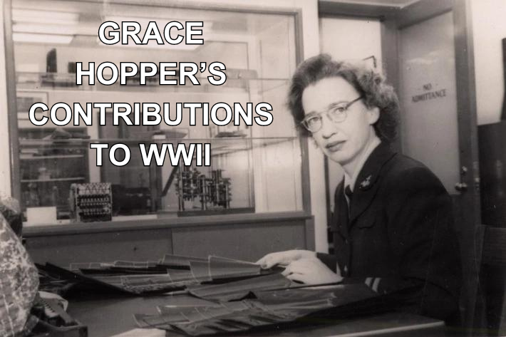
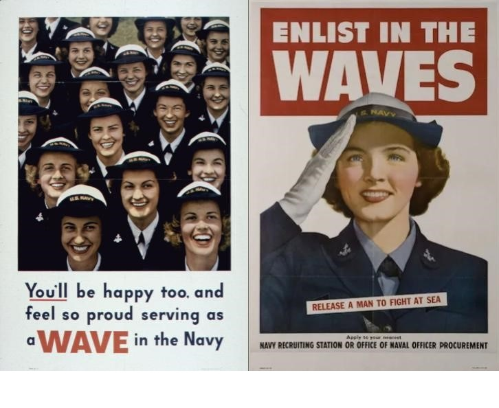
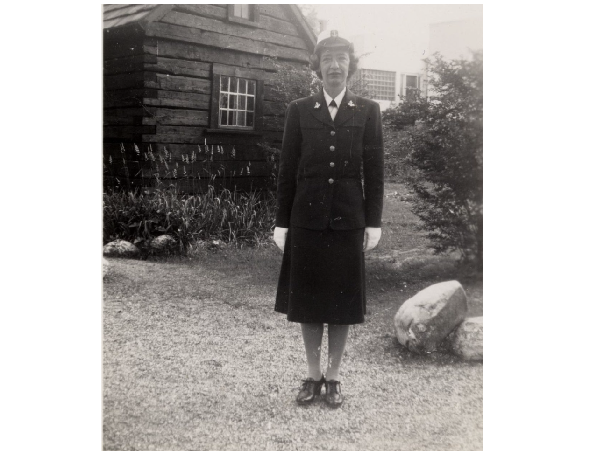
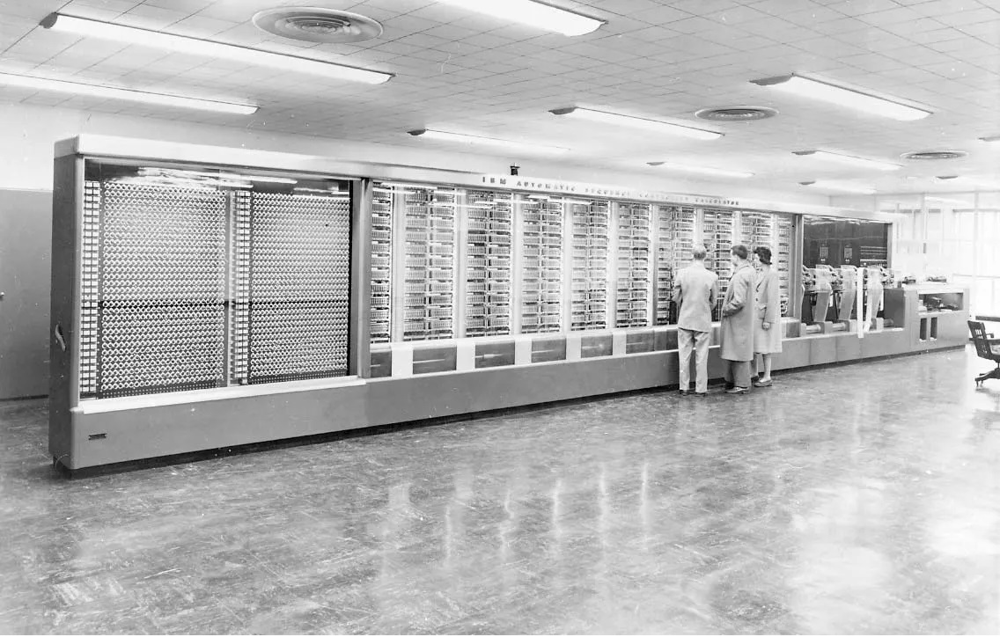
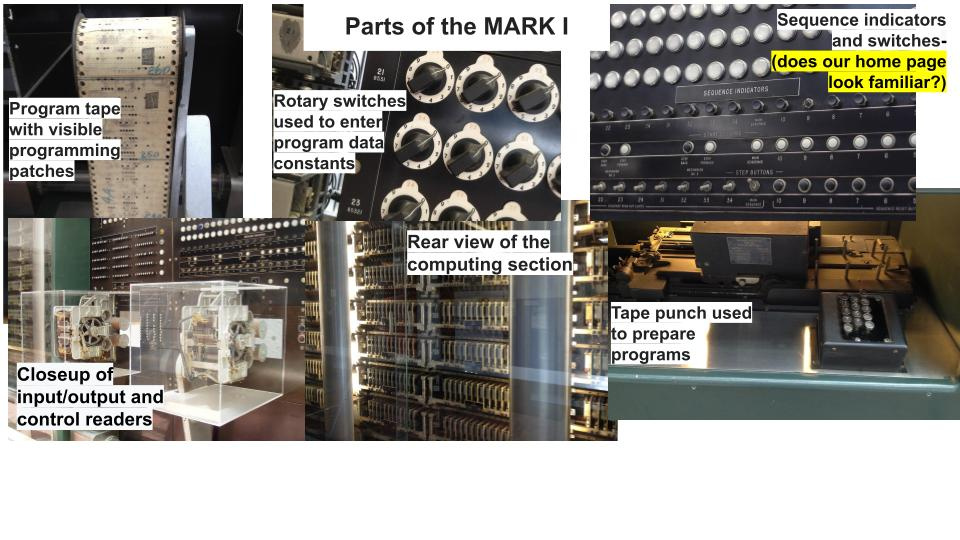
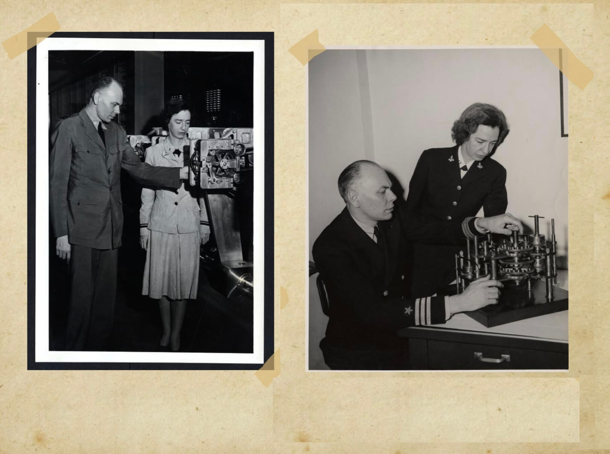
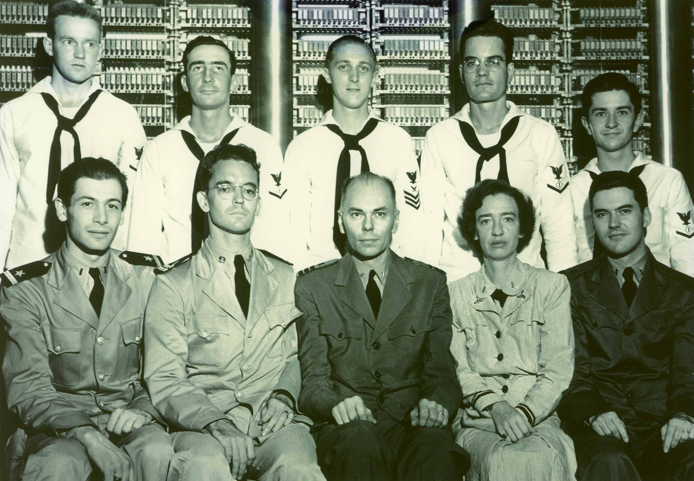
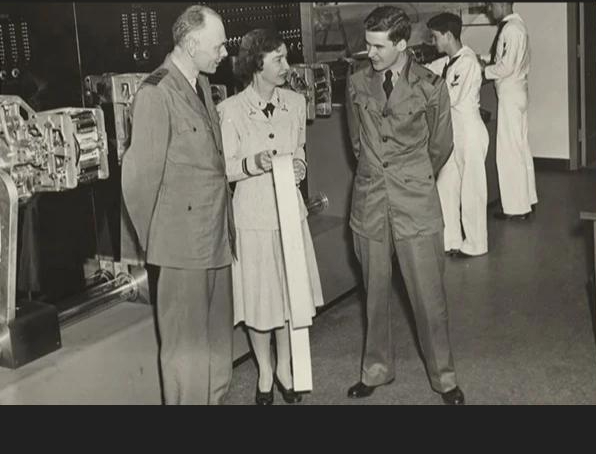

1 / 10

Use the arrows to scroll through each slide to learn about Grace's contribiutions to WWII.
2 / 10
When the US entered the war after being attacked at Pearl Harbor, Grace immediately knew that she wanted to enlist in the military and serve her country.
3 / 10

Grace tried to join the United States Naval Reserve as a member of the WAVES, or Women Accepted for Volunteer Emergency Service. The WAVES served in wartime jobs previously held by men, such as clerical work, medicine, parachute rigging, engineering, etc.
4 / 10
Unfortunately, Grace was initally denied by the Navy. They said she was too old (35) and didn't weigh enough for her height. They also said that her teaching job at Vassar was a "high need" position that she was not allowed to leave.
5 / 10

Grace was persistent! She did not give up just because she was rejected. Finally, in December 1943, Grace Hopper was sworn in to the United States Naval Reserve.
6 / 10

Because of her Mathematics background, Grace was assigned to the Bureau of Ships Computation Project at Harvard University in Cambridge, MA. There, she joined a team working on the IBM Automatic Sequence Controlled Calculator, better known as the MARK I, the first electromechanical computer in the United States.
7 / 10

The Harvard Mark I was the first operating machine that could execute long computations automatically. A steel frame 51 feet long and 8 feet high held the calculator, which consisted of an interlocking panel of small gears, counters, switches and control circuits, all only a few inches in depth. The ASCC used 500 miles (800 km) of wire with three million connections, 3,500 multipole relays with 35,000 contacts, 2,225 counters, 1,464 tenpole switches and tiers of 72 adding machines, each with 23 significant numbers. It was the industry’s largest electromechanical calculator.
8 / 10

Grace and her colleagues, under the direction of Commander Howard Aiken (pictured above), worked on top-secret calculations essential to the war effort—calculating rocket trajectories, creating range tables for new anti-aircraft guns, and calibrating minesweepers. With the new MARK I, these critical military processes could be done faster than ever before.
9 / 10

The men who invented computers focused primarily on the hardware. But the women who became involved during World War II saw early on the importance of programming. They developed ways to code the instructions that told the hardware what operations to perform. This software completely revolutionized the concept of the computer.
10 /10

What made Grace so special was her ability to know how to translate real-world problems into mathematical equations (like while she was at Vassar), and then to communicate those in commands that a machine could understand. “I learned languages of oceanography, of this whole business of minesweeping, of detonators, of proximity fuses, of biomedical stuff,” she explained. “We had to learn their vocabularies in order to be able to run their problems. I could switch my vocabulary and speak highly technical for the programmers, and then tell the same things to the managers a few hours later but with a totally different vocabulary.”
❮
❯